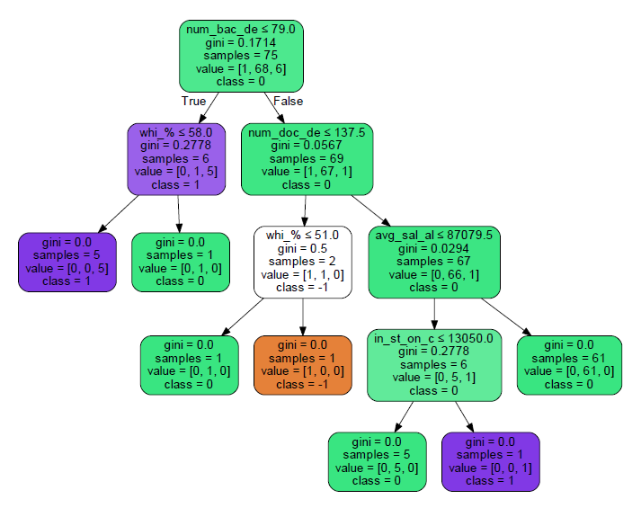
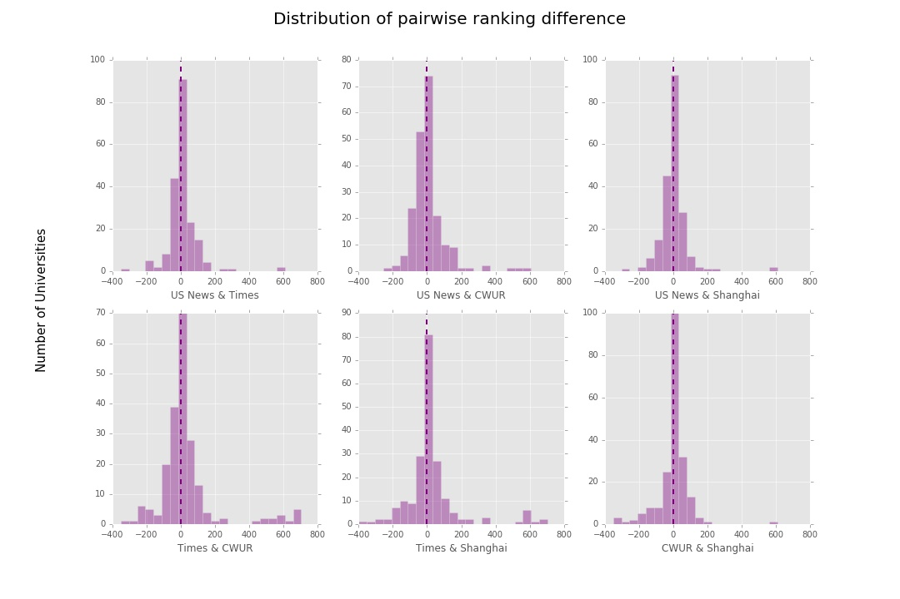
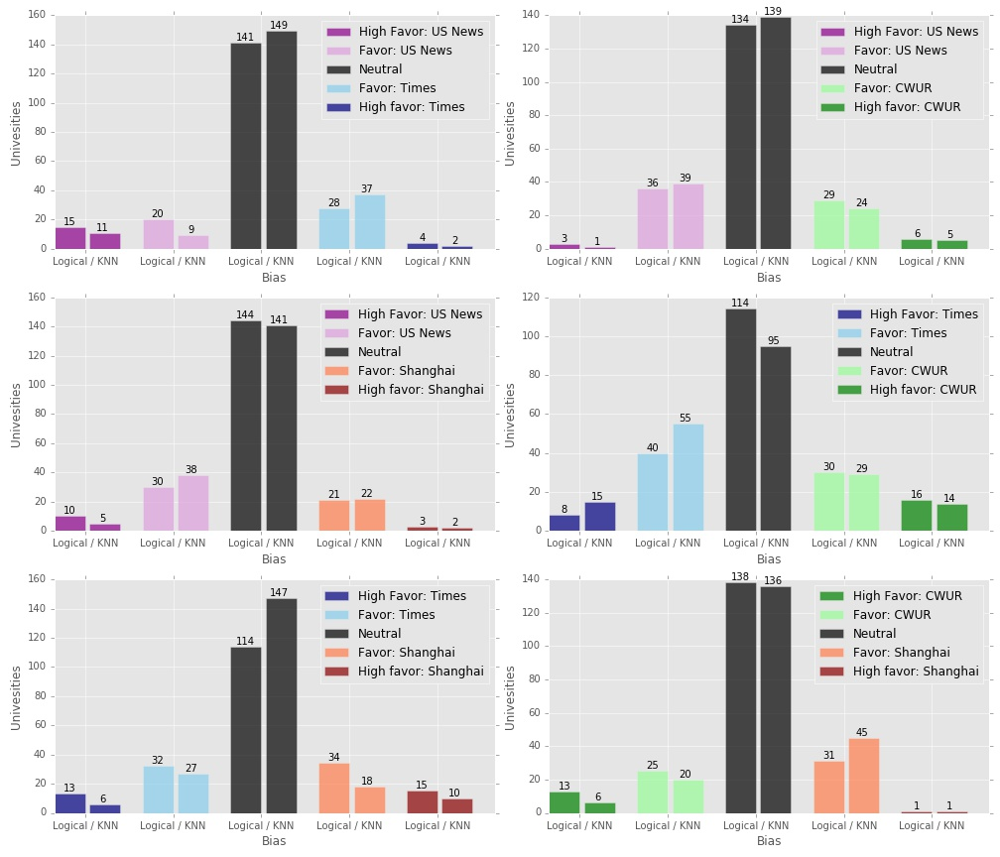
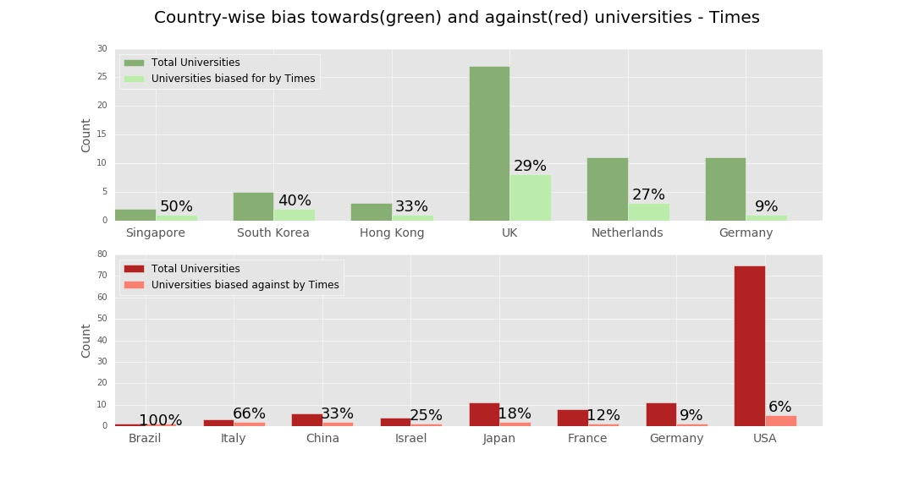
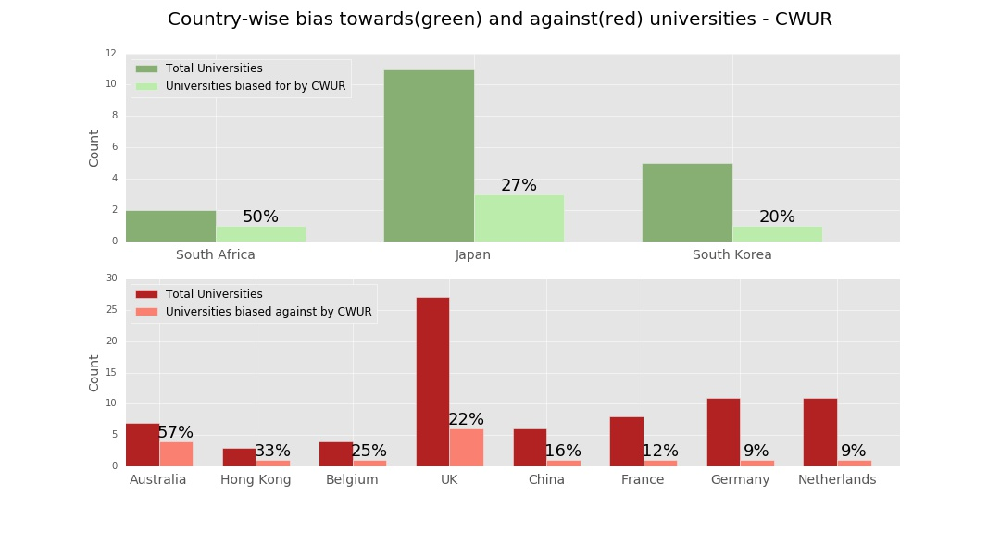
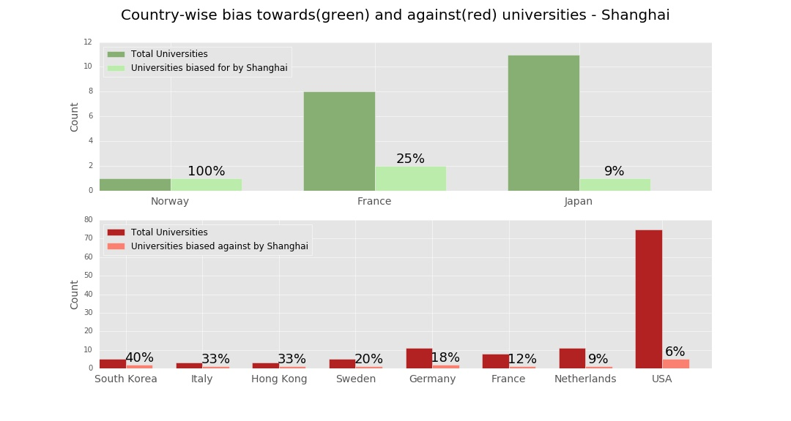

Bias analysis in university ranking systems
A. Motivation
I am interested in analyzing bias in various University Ranking Systems. As part of an independent study with professor Jevin West at the University of Washington, I am using various statistical analysis techniques to identify if and how University Ranking Systems are biased. I am using Javascript/D3 to visualize the results.
B. Data Used
For my analysis, I used multiple datasets and spent a significant amount of time cleaning the data, collating the different parts and performing statistical analysis. Since I had compiled some of this data for Assignment 2 as well, there is some continuation. The datasets I used are –
- World University Ranking dataset: I obtained this dataset from Kaggle. The data gives the university rankings compiled by 3 different institutions – Times Higher Educations (UK), Shanghai Rankings (China), Center for World University Ranking (Saudi Arabia).
- US News University Ranking data : I obtained this data from Washington Post portal and it gives the university rankings published by US News (USA)
- University information : I compiled this information from the National Centre for Education Statistics. The features obtained from this dataset include tuition and fees, undergraduate count, total headcount, location, region, master’s student count, count of faculty, faculty salary etc.
I filtered the data for a single year - 2014 and only considered the top 150 Universities. Based on future results, I plan on scaling the analysis.
C. Description of visualizations
C.1 Scatter Plot (can be found under 'Explore Universities' tab): This visualization allows the user to explore the various dimensions related to an university. The main features are -- Users can interactively select the x and y axis for the plot. Currently there are 11 options
- Users can visualize 4 dimensions by setting its value to size
- Users can additionally filter the data points based on regions (which has also been represented in the data via color)
- Users can explore the university names by hovering mouse pointer over the circles in the scatter plot
- Blue circles represent the different ranking systems and grey circles represent the universities
- A red color tie indicates that the ranking system biases AGAINST that university whereas a green color tie indicates that the ranking system biases TOWARDS that university.
- Ties can only be formed between ranking systems and universities
- Users can interactively drag each of the nodes to explore the network element and since the node has charge and gravity, it will attract or repel other nodes based on its ties
- Users can interactively drag each of the nodes to explore the network element. Since the node has charge and gravity, it will attract or repel other nodes based on its ties so it is immediately visible how many ranking systems bias towards or against universities
- Nodes with more ties tend ot gravitate towards the core of the network whereas the ones with fewer ties are at the peripheri
- The feature of node clicking interactivity allows user to access information on-demand and not be overwhelmed by the information present in the plot
Analysis Method
Approach
The complete analysis was done in iPython Notebook and you can view it on Github or Kaggle. I took the following approach while conducting the analysis
- Perform exploratory analysis of data to see how the universities are distributed based on rankings. Apart from the histogram below, you can go to Explore Universities tab on this website to explore the data for yourself! Please note that the rankkng considered for the analysis is US News ranking.
- Assign each university a cluster class based on the pair-wise difference it exhibits. The clustering is done by knn and also by eyeballing the data to compare the results
- Based on the clustering, assign an impartiality score to each university based on the pair-wise bias. The impartiality score helps us obtain bias in rankings based on countries
- Perform statistical analysis (by computing the metric - 'impartiality score') and identified the universities towards/against which ranking systems are biased and visualized the results. The results for this analysis can be seen in the Explore Bias tab on this website!
- Next, I combined the first 2 parts to check for the predominant or latent bias factors demonstrated by ranking systems. This did not yield satisfactory results.
- Finally, I applied various predictive algorithms to glean how predictive each feature is for bias.


0




We observe that when checking for the bias predictors for the pair US News and Times, the biggest factor in US News biasing towards a University is if the white population is less than 58%. On the flip side, US News is likely to bias against a University if the number of doctoral degree candidates is less than 51. Since the sample size is small, these results are no wayconclusive but it is interesting to observe these efects. Future iterations of this project will consider more number of universities and ranking systems.